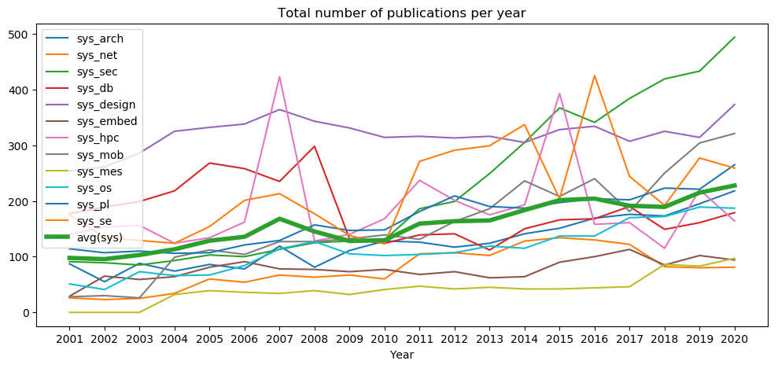
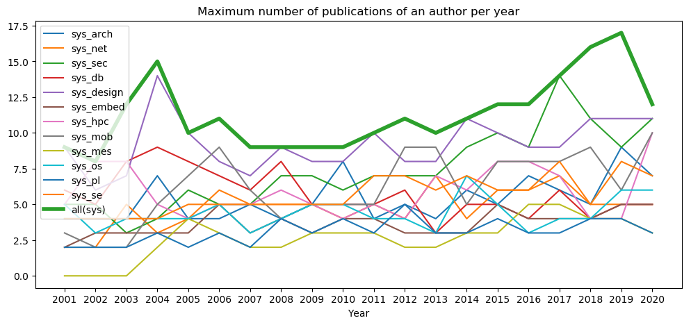
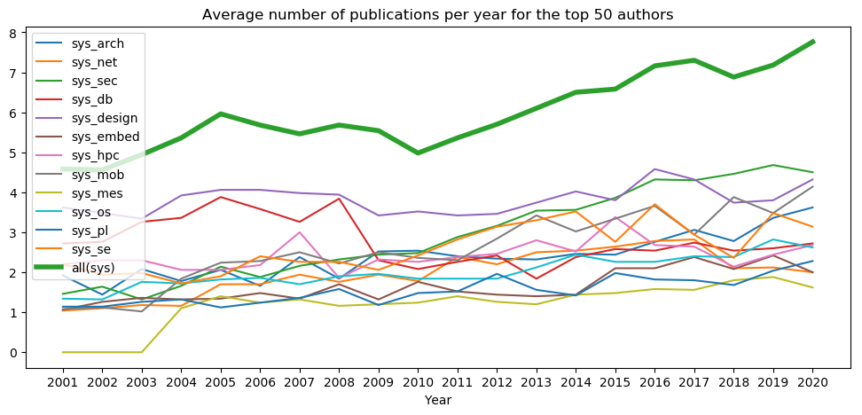

An overview of the Systems Circus
- This page highlights the system circus, including the system security circus.
- The focus of these statistics is on authors and top tier publications.
- All code is available on the HexHive GitHub.
- Do you have ideas, comments, or improvements? Reach out to Mathias Payer via or first.
- Data was processed on 2021-01-05.
Key motivation for this page is to provide an overview of the systems community, its publications, its authors, and its cliques.
The data is sourced from DBLP (for publication data) and CSRankings (for affiliation data). The scripts process the data and create the necessary files for the web page, allowing a fast turnaround whenever new data is added to DBLP.
Area statistics
- Per-area statistics for the major systems conferences.
- We single out total papers, maximum and average papers of an author (max/a and avg/a), average for the top 50 authors (a50), and active authors (a)
- The total number of publications increases steadily for most areas, with security and mobile having the largest increases.
- The maximum number of publications of a single author in a year is slowly increasing, somewhat in line with the increase of the total number of authors per paper.
- As a top author, the number of papers across all areas of systems have increased from around 4-5 to 7-8 papers per year.
- The total number of active authors in a year is steadily increasing, with security and design taking the lead.




| Area | Total | 20 | 19 | 18 | 17 | 16 | 15 | 14 | 13 | 12 | 11 | 10 | 9 | 8 | 7 | 6 | 5 | 4 | 3 | 2 | 1 | <0 |
|---|---|---|---|---|---|---|---|---|---|---|---|---|---|---|---|---|---|---|---|---|---|---|
| Systems: Architecture | 4657 | 252 | 218 | 195 | 173 | 176 | 169 | 151 | 141 | 124 | 117 | 126 | 128 | 111 | 81 | 119 | 78 | 86 | 74 | 88 | 55 | 87 |
| max/a | 9 | 7 | 9 | 5 | 6 | 7 | 5 | 6 | 4 | 5 | 4 | 8 | 5 | 4 | 5 | 4 | 4 | 7 | 4 | 4 | 4 | |
| avg/a | 1.23 | 1.26 | 1.25 | 1.18 | 1.23 | 1.22 | 1.18 | 1.16 | 1.18 | 1.17 | 1.21 | 1.23 | 1.2 | 1.14 | 1.23 | 1.14 | 1.18 | 1.17 | 1.21 | 1.14 | 1.17 | |
| avg/a50 | 3.8 | 3.62 | 3.36 | 2.78 | 3.06 | 2.76 | 2.44 | 2.46 | 2.32 | 2.34 | 2.4 | 2.54 | 2.52 | 1.84 | 2.38 | 1.66 | 2.06 | 1.78 | 2.08 | 1.44 | 1.92 | |
| #a | 1154 | 918 | 777 | 765 | 673 | 658 | 535 | 537 | 431 | 430 | 412 | 403 | 381 | 292 | 384 | 233 | 297 | 223 | 257 | 162 | 266 | |
| Systems: Networks | 2149 | 118 | 81 | 80 | 82 | 122 | 130 | 134 | 128 | 102 | 107 | 105 | 60 | 67 | 63 | 67 | 54 | 60 | 34 | 25 | 23 | 26 |
| max/a | 5 | 5 | 5 | 5 | 7 | 6 | 6 | 4 | 7 | 4 | 5 | 4 | 5 | 5 | 5 | 6 | 4 | 3 | 5 | 2 | 2 | |
| avg/a | 1.16 | 1.12 | 1.13 | 1.13 | 1.2 | 1.22 | 1.17 | 1.16 | 1.2 | 1.15 | 1.19 | 1.16 | 1.2 | 1.16 | 1.23 | 1.21 | 1.19 | 1.08 | 1.12 | 1.08 | 1.03 | |
| avg/a50 | 2.52 | 2.0 | 2.12 | 2.1 | 2.82 | 2.78 | 2.64 | 2.54 | 2.5 | 2.2 | 2.38 | 1.78 | 1.94 | 1.76 | 1.94 | 1.7 | 1.7 | 1.16 | 1.18 | 1.1 | 1.04 | |
| #a | 613 | 421 | 443 | 411 | 514 | 553 | 565 | 535 | 410 | 430 | 398 | 251 | 238 | 234 | 208 | 163 | 186 | 103 | 74 | 62 | 75 | |
| Systems: Security | 5717 | 500 | 494 | 433 | 419 | 384 | 341 | 367 | 305 | 249 | 199 | 186 | 130 | 128 | 125 | 113 | 100 | 103 | 93 | 85 | 89 | 91 |
| max/a | 8 | 11 | 9 | 11 | 14 | 9 | 10 | 9 | 7 | 7 | 7 | 6 | 7 | 7 | 5 | 5 | 6 | 4 | 3 | 5 | 5 | |
| avg/a | 1.28 | 1.3 | 1.31 | 1.29 | 1.33 | 1.34 | 1.25 | 1.28 | 1.29 | 1.28 | 1.21 | 1.21 | 1.21 | 1.18 | 1.19 | 1.18 | 1.25 | 1.14 | 1.07 | 1.16 | 1.12 | |
| avg/a50 | 4.78 | 4.5 | 4.68 | 4.46 | 4.3 | 4.32 | 3.86 | 3.56 | 3.54 | 3.16 | 2.88 | 2.48 | 2.44 | 2.32 | 2.16 | 1.88 | 2.14 | 1.66 | 1.32 | 1.64 | 1.46 | |
| #a | 1860 | 1824 | 1524 | 1514 | 1255 | 1113 | 1204 | 901 | 772 | 590 | 588 | 384 | 358 | 358 | 305 | 246 | 225 | 228 | 223 | 203 | 197 | |
| Systems: Databases | 6510 | 234 | 179 | 161 | 149 | 190 | 168 | 166 | 150 | 112 | 141 | 139 | 124 | 132 | 298 | 235 | 258 | 268 | 218 | 199 | 189 | 177 |
| max/a | 8 | 5 | 5 | 4 | 6 | 4 | 5 | 5 | 3 | 6 | 5 | 5 | 5 | 8 | 6 | 7 | 8 | 9 | 8 | 5 | 6 | |
| avg/a | 1.21 | 1.15 | 1.16 | 1.19 | 1.18 | 1.18 | 1.19 | 1.15 | 1.1 | 1.18 | 1.14 | 1.14 | 1.16 | 1.32 | 1.27 | 1.33 | 1.34 | 1.38 | 1.3 | 1.24 | 1.24 | |
| avg/a50 | 3.16 | 2.72 | 2.6 | 2.54 | 2.74 | 2.54 | 2.58 | 2.38 | 1.84 | 2.42 | 2.26 | 2.08 | 2.3 | 3.84 | 3.26 | 3.58 | 3.88 | 3.36 | 3.26 | 2.76 | 2.72 | |
| #a | 861 | 706 | 609 | 537 | 730 | 619 | 589 | 590 | 420 | 488 | 527 | 394 | 437 | 790 | 661 | 713 | 696 | 553 | 520 | 515 | 465 | |
| Systems: Design | 11665 | 431 | 373 | 314 | 325 | 307 | 334 | 328 | 305 | 316 | 313 | 316 | 314 | 331 | 343 | 364 | 338 | 332 | 325 | 286 | 261 | 254 |
| max/a | 9 | 11 | 11 | 11 | 9 | 9 | 10 | 11 | 8 | 8 | 10 | 8 | 8 | 9 | 7 | 8 | 10 | 14 | 7 | 6 | 9 | |
| avg/a | 1.3 | 1.29 | 1.27 | 1.26 | 1.28 | 1.33 | 1.26 | 1.31 | 1.25 | 1.22 | 1.25 | 1.24 | 1.24 | 1.28 | 1.25 | 1.28 | 1.29 | 1.3 | 1.26 | 1.29 | 1.32 | |
| avg/a50 | 4.46 | 4.32 | 3.8 | 3.74 | 4.32 | 4.58 | 3.8 | 4.02 | 3.74 | 3.46 | 3.42 | 3.52 | 3.42 | 3.94 | 3.98 | 4.06 | 4.06 | 3.92 | 3.34 | 3.48 | 3.62 | |
| #a | 1583 | 1351 | 1057 | 1117 | 1043 | 1023 | 1054 | 930 | 953 | 911 | 862 | 843 | 920 | 892 | 1019 | 902 | 825 | 826 | 708 | 641 | 649 | |
| Embedded Systems | 2146 | 44 | 94 | 102 | 85 | 113 | 100 | 90 | 64 | 62 | 73 | 68 | 77 | 73 | 77 | 78 | 91 | 81 | 64 | 59 | 65 | 29 |
| max/a | 2 | 5 | 5 | 4 | 4 | 4 | 5 | 3 | 3 | 3 | 4 | 4 | 3 | 4 | 3 | 5 | 3 | 3 | 3 | 3 | 2 | |
| avg/a | 1.05 | 1.17 | 1.24 | 1.2 | 1.22 | 1.17 | 1.2 | 1.1 | 1.09 | 1.09 | 1.13 | 1.17 | 1.07 | 1.16 | 1.08 | 1.1 | 1.07 | 1.09 | 1.12 | 1.08 | 1.04 | |
| avg/a50 | 1.16 | 2.0 | 2.42 | 2.08 | 2.38 | 2.1 | 2.1 | 1.44 | 1.4 | 1.44 | 1.52 | 1.76 | 1.32 | 1.7 | 1.34 | 1.48 | 1.34 | 1.32 | 1.36 | 1.26 | 1.06 | |
| #a | 161 | 295 | 302 | 275 | 335 | 317 | 269 | 212 | 222 | 233 | 200 | 219 | 227 | 220 | 226 | 249 | 244 | 178 | 148 | 172 | 75 | |
| Systems: HPC | 5422 | 66 | 164 | 220 | 115 | 161 | 158 | 393 | 193 | 175 | 201 | 237 | 168 | 140 | 128 | 423 | 162 | 134 | 124 | 156 | 153 | 140 |
| max/a | 3 | 10 | 4 | 4 | 7 | 8 | 8 | 6 | 7 | 4 | 5 | 4 | 5 | 6 | 5 | 5 | 4 | 5 | 8 | 8 | 5 | |
| avg/a | 1.06 | 1.16 | 1.13 | 1.11 | 1.13 | 1.18 | 1.16 | 1.19 | 1.17 | 1.15 | 1.11 | 1.16 | 1.15 | 1.1 | 1.18 | 1.11 | 1.1 | 1.12 | 1.1 | 1.13 | 1.13 | |
| avg/a50 | 1.34 | 2.68 | 2.44 | 2.14 | 2.64 | 2.68 | 3.38 | 2.52 | 2.8 | 2.46 | 2.38 | 2.26 | 2.32 | 1.86 | 3.0 | 2.18 | 2.06 | 2.06 | 2.3 | 2.3 | 2.2 | |
| #a | 270 | 825 | 885 | 521 | 758 | 632 | 1404 | 734 | 732 | 699 | 852 | 600 | 516 | 422 | 1131 | 599 | 516 | 424 | 647 | 493 | 457 | |
| Mobile Systems | 3561 | 298 | 321 | 304 | 250 | 181 | 240 | 208 | 236 | 186 | 163 | 131 | 139 | 132 | 127 | 127 | 104 | 112 | 99 | 26 | 30 | 28 |
| max/a | 9 | 10 | 6 | 9 | 8 | 8 | 8 | 5 | 9 | 9 | 5 | 5 | 5 | 4 | 6 | 9 | 7 | 5 | 2 | 2 | 3 | |
| avg/a | 1.27 | 1.41 | 1.29 | 1.36 | 1.26 | 1.39 | 1.33 | 1.27 | 1.33 | 1.32 | 1.15 | 1.14 | 1.2 | 1.14 | 1.19 | 1.18 | 1.17 | 1.14 | 1.01 | 1.06 | 1.05 | |
| avg/a50 | 3.82 | 4.14 | 3.48 | 3.88 | 2.94 | 3.66 | 3.34 | 3.02 | 3.42 | 2.84 | 2.3 | 2.36 | 2.5 | 2.22 | 2.5 | 2.28 | 2.24 | 1.84 | 1.02 | 1.12 | 1.08 | |
| #a | 1135 | 1014 | 981 | 852 | 647 | 781 | 687 | 834 | 664 | 570 | 504 | 557 | 460 | 441 | 426 | 386 | 362 | 297 | 69 | 101 | 79 | |
| Systems: Measurements | 929 | 102 | 97 | 83 | 86 | 46 | 44 | 42 | 42 | 45 | 42 | 47 | 41 | 32 | 39 | 34 | 36 | 39 | 32 | |||
| max/a | 5 | 3 | 4 | 4 | 5 | 5 | 3 | 3 | 2 | 2 | 3 | 3 | 3 | 2 | 2 | 3 | 4 | 2 | ||||
| avg/a | 1.16 | 1.08 | 1.12 | 1.12 | 1.17 | 1.16 | 1.13 | 1.12 | 1.06 | 1.08 | 1.12 | 1.08 | 1.1 | 1.06 | 1.13 | 1.1 | 1.17 | 1.06 | ||||
| avg/a50 | 2.26 | 1.62 | 1.88 | 1.8 | 1.56 | 1.58 | 1.48 | 1.44 | 1.2 | 1.26 | 1.4 | 1.24 | 1.2 | 1.16 | 1.32 | 1.24 | 1.4 | 1.1 | ||||
| #a | 395 | 376 | 353 | 326 | 168 | 182 | 185 | 177 | 176 | 165 | 165 | 160 | 100 | 135 | 120 | 119 | 118 | 87 | ||||
| Systems: OS | 2902 | 133 | 187 | 189 | 172 | 170 | 137 | 137 | 115 | 119 | 107 | 104 | 102 | 105 | 127 | 114 | 84 | 67 | 66 | 73 | 41 | 51 |
| max/a | 4 | 6 | 6 | 4 | 4 | 3 | 5 | 7 | 3 | 4 | 4 | 5 | 5 | 4 | 3 | 5 | 4 | 4 | 4 | 3 | 5 | |
| avg/a | 1.1 | 1.15 | 1.15 | 1.14 | 1.16 | 1.11 | 1.12 | 1.16 | 1.12 | 1.1 | 1.11 | 1.1 | 1.13 | 1.11 | 1.09 | 1.15 | 1.18 | 1.16 | 1.15 | 1.15 | 1.12 | |
| avg/a50 | 2.24 | 2.62 | 2.82 | 2.38 | 2.4 | 2.26 | 2.26 | 2.44 | 2.12 | 1.84 | 1.84 | 1.84 | 1.96 | 1.9 | 1.7 | 1.86 | 1.82 | 1.72 | 1.76 | 1.32 | 1.34 | |
| #a | 665 | 874 | 961 | 746 | 752 | 601 | 646 | 458 | 491 | 432 | 393 | 410 | 379 | 416 | 375 | 278 | 231 | 228 | 247 | 105 | 146 | |
| Systems: Programming Languages | 3062 | 145 | 153 | 121 | 113 | 110 | 114 | 114 | 95 | 96 | 107 | 83 | 80 | 72 | 84 | 72 | 60 | 55 | 53 | 58 | 56 | 61 |
| max/a | 4 | 4 | 5 | 4 | 3 | 3 | 4 | 3 | 3 | 5 | 3 | 4 | 3 | 4 | 2 | 3 | 2 | 3 | 2 | 2 | 2 | |
| avg/a | 1.12 | 1.15 | 1.12 | 1.1 | 1.11 | 1.12 | 1.13 | 1.07 | 1.09 | 1.15 | 1.11 | 1.1 | 1.05 | 1.12 | 1.09 | 1.07 | 1.04 | 1.11 | 1.08 | 1.06 | 1.05 | |
| avg/a50 | 2.24 | 2.28 | 2.04 | 1.68 | 1.8 | 1.82 | 1.98 | 1.42 | 1.56 | 1.96 | 1.52 | 1.48 | 1.18 | 1.58 | 1.36 | 1.24 | 1.12 | 1.32 | 1.26 | 1.14 | 1.14 | |
| #a | 521 | 518 | 430 | 353 | 356 | 333 | 378 | 304 | 302 | 321 | 244 | 231 | 181 | 245 | 202 | 179 | 134 | 149 | 166 | 120 | 134 | |
| Systems: Software Engineering | 5929 | 298 | 259 | 277 | 192 | 244 | 425 | 204 | 337 | 299 | 291 | 271 | 123 | 138 | 177 | 213 | 201 | 154 | 124 | 129 | 134 | 175 |
| max/a | 9 | 7 | 8 | 5 | 8 | 6 | 6 | 7 | 6 | 7 | 7 | 5 | 5 | 5 | 5 | 5 | 5 | 4 | 4 | 4 | 4 | |
| avg/a | 1.29 | 1.22 | 1.26 | 1.14 | 1.26 | 1.26 | 1.24 | 1.27 | 1.24 | 1.25 | 1.24 | 1.23 | 1.13 | 1.14 | 1.15 | 1.17 | 1.12 | 1.11 | 1.17 | 1.16 | 1.17 | |
| avg/a50 | 4.0 | 3.14 | 3.48 | 2.36 | 2.94 | 3.7 | 2.76 | 3.52 | 3.3 | 3.14 | 2.82 | 2.42 | 2.06 | 2.26 | 2.26 | 2.4 | 1.9 | 1.72 | 1.98 | 1.94 | 2.2 | |
| #a | 1084 | 884 | 885 | 631 | 722 | 1145 | 552 | 855 | 743 | 731 | 641 | 335 | 394 | 460 | 534 | 444 | 369 | 317 | 292 | 291 | 352 | |
| All Areas | 54649 | 2621 | 2620 | 2479 | 2161 | 2204 | 2360 | 2334 | 2111 | 1885 | 1861 | 1813 | 1486 | 1461 | 1669 | 1959 | 1566 | 1491 | 1306 | 1184 | 1096 | 1119 |
| max/a | 11 | 12 | 17 | 16 | 14 | 12 | 12 | 11 | 10 | 11 | 10 | 9 | 9 | 9 | 9 | 11 | 10 | 15 | 12 | 8 | 9 | |
| avg/a | 1.35 | 1.35 | 1.33 | 1.32 | 1.34 | 1.36 | 1.31 | 1.31 | 1.31 | 1.3 | 1.26 | 1.27 | 1.27 | 1.29 | 1.28 | 1.27 | 1.29 | 1.28 | 1.24 | 1.22 | 1.23 | |
| avg/a50 | 7.56 | 7.76 | 7.18 | 6.88 | 7.3 | 7.16 | 6.58 | 6.5 | 6.1 | 5.7 | 5.36 | 4.98 | 5.54 | 5.68 | 5.46 | 5.68 | 5.96 | 5.36 | 4.94 | 4.56 | 4.58 | |
| #a | 9414 | 9157 | 8443 | 7409 | 7275 | 7339 | 7457 | 6590 | 5841 | 5537 | 5380 | 4411 | 4238 | 4536 | 5231 | 4252 | 3933 | 3396 | 3181 | 2765 | 2803 |